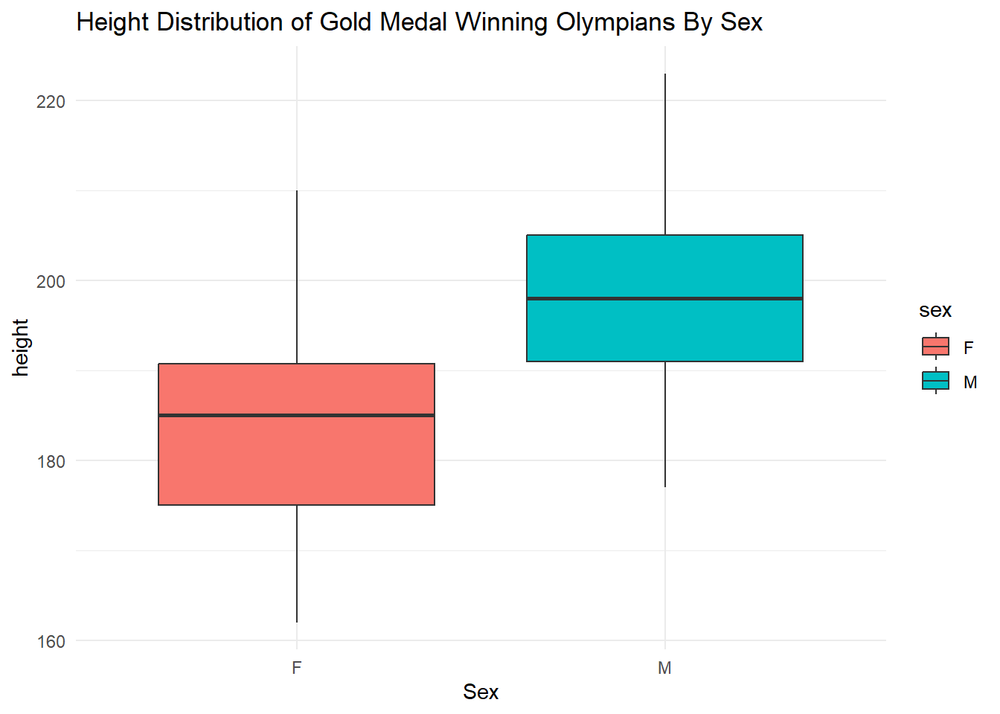
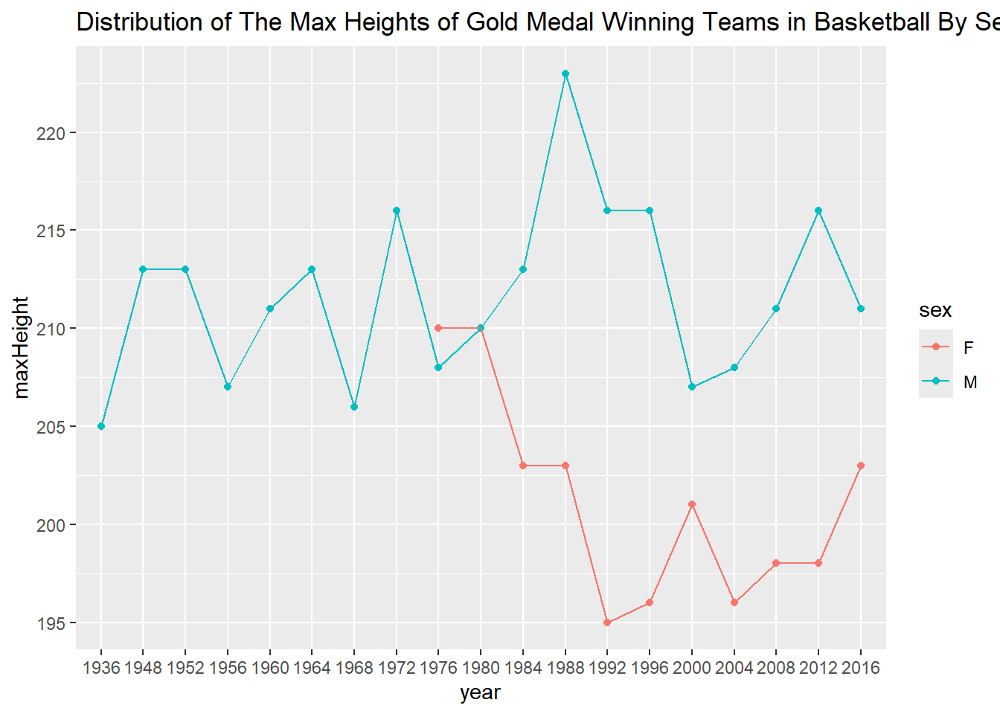
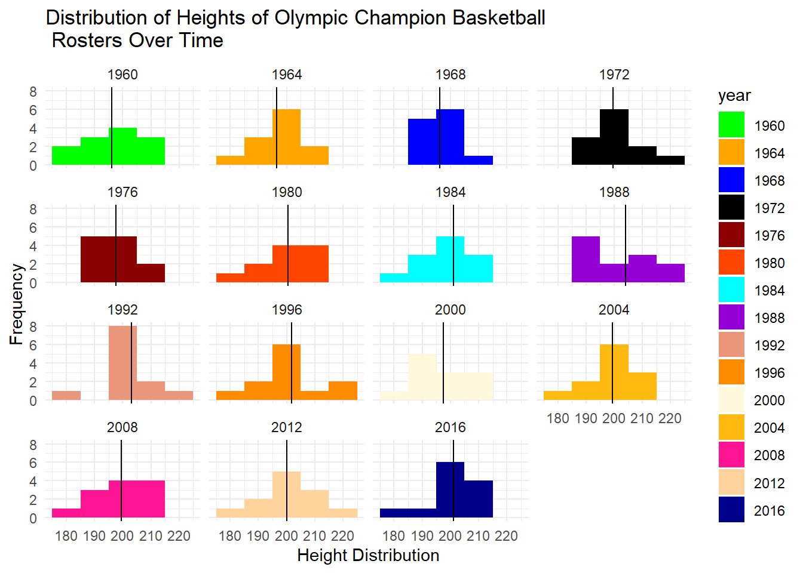
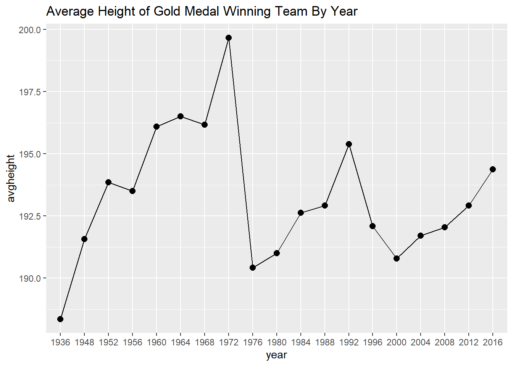
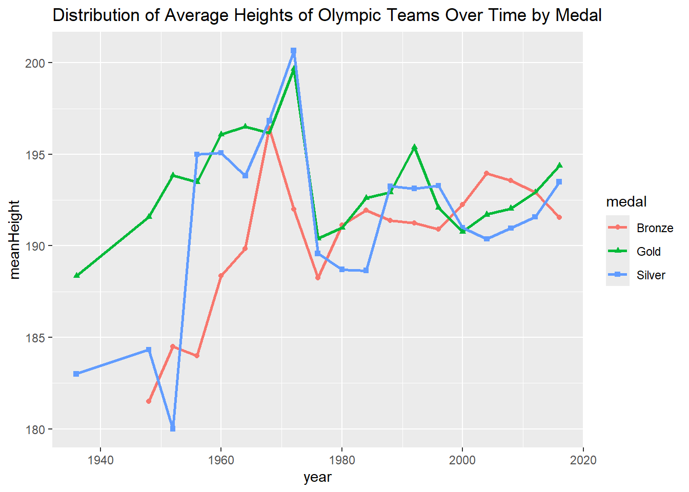
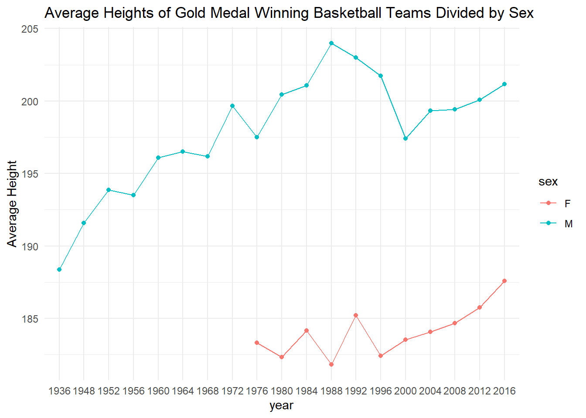

Rows: 271116 Columns: 15
── Column specification ────────────────────────────────────────────────────────
Delimiter: ","
chr (10): name, sex, team, noc, games, season, city, sport, event, medal
dbl (5): id, age, height, weight, year
ℹ Use `spec()` to retrieve the full column specification for this data.
ℹ Specify the column types or set `show_col_types = FALSE` to quiet this message.
olympics %>%filter(medal =='Gold') %>%filter(sport =='Basketball') %>%group_by(sex) %>%ggplot(aes(y = height, x = sex, fill = sex)) +geom_boxplot() +labs(title ="Height Distribution of Gold Medal Winning Olympians By Sex", x ='Sex') +theme_minimal()
Warning: Removed 1 row containing non-finite outside the scale range
(`stat_boxplot()`).

olympics4 <- olympics4 %>%group_by(year,sex) %>%mutate(maxHeight =max(height))olympics4 %>%ggplot(aes(x = year, y = maxHeight, group = sex, color = sex)) +geom_point() +geom_line() +labs(title ="Distribution of The Max Heights of Gold Medal Winning Teams in Basketball By Sex")

olympics4 %>%ggplot(aes(x = height, fill = year)) +geom_histogram(binwidth =10) +facet_wrap(year~.) +labs(x ='Height Distribution', y ='Frequency', title ='Distribution of Heights of Olympic Champion Basketball \n Rosters Over Time') +theme_minimal() +geom_vline(aes(xintercept = avgheight))+scale_fill_manual(values=c("green","orange","blue","black", "red4", "orangered","cyan","darkviolet","darksalmon","darkorange","cornsilk","darkgoldenrod1","deeppink","burlywood1","blue4","darkgreen","darkslategray3","deepskyblue", "grey"))

olympics4 %>%ggplot(aes(x = year, y = avgheight, group =1)) +geom_point(cex =2.5) +geom_line() +labs(title ="Average Height of Gold Medal Winning Team By Year")

olympics5 <- olympics %>%filter(sport =='Basketball') %>% na.omit %>%group_by(medal, year) %>%mutate(meanHeight =mean(height)) olympics5 %>%ggplot(aes(x = year, y = meanHeight, color = medal, shape = medal)) +geom_point() +geom_line(size =1) +labs(title ="Distribution of Average Heights of Olympic Teams Over Time by Medal")
Warning: Using `size` aesthetic for lines was deprecated in ggplot2 3.4.0.
ℹ Please use `linewidth` instead.

olympics6 <- olympics4 %>%group_by(year,sex) %>%mutate(mHeight =mean(height)) %>%ggplot(aes(x = year, y = mHeight, color = sex, group = sex)) +geom_point() +geom_line() +labs(title ="Average Heights of Gold Medal Winning Basketball Teams Divided by Sex", y ="Average Height") +theme_minimal()olympics6

olympics4 %>%filter(sex =='M') %>%ggplot(aes(x = height, fill = year)) +geom_boxplot() +facet_wrap(year~., nrow =5) +labs(x ='Height Distribution', y ='Frequency', title ='Distribution of Heights of Olympic Champion Basketball \n Rosters Over Time') +theme_minimal()